1. Objective
This document provides the complete deployment procedure for installing Splunk Enterprise on an Ubuntu Server virtual machine hosted on Proxmox Virtual Environment (VE).
The deployment includes:
- Splunk Enterprise account creation
- Downloading the Splunk Enterprise installation package
- Creating a dedicated Ubuntu Server VM on Proxmox
- Configuring static network settings
- Installing Splunk Enterprise
- Resolving installation and permission issues
- Initializing the Splunk service
- Verifying successful deployment
2. Environment Overview
Virtual Machine Information
| Parameter | Value |
|---|---|
| VM Name | SPLUNK-SVR |
| VM ID | 107 |
| Hypervisor | Proxmox VE |
| Host | SVR-01 |
| Operating System | Ubuntu Server 26.04 LTS |
| Static IP | 10.10.100.17 |
| Gateway | 10.10.100.1 |
| Primary DNS | 10.10.100.11 |
| Secondary DNS | 1.1.1.1 |
| Domain | jcag-lab.local |
3. Prerequisites
Minimum Hardware Requirements
| Component | Requirement |
|---|---|
| CPU | 2 vCPU |
| Memory | 4 GB RAM |
| Storage | 50 GB |
Recommended Hardware Requirements
| Component | Recommendation |
|---|---|
| CPU | 2–4 vCPU |
| Memory | 8 GB RAM |
| Storage | 100 GB |
Required Downloads
- Ubuntu Server 26.04 LTS ISO
- Splunk Enterprise Linux AMD64 Package (.deb)
4. Create Splunk Enterprise Account
Navigate to the Splunk website and create a Splunk Enterprise account.
After authentication, navigate to Splunk Enterprise page > look for Linux Debian package.
5. Preserve Installation Command
Splunk provides a direct download command that can be reused later for installation.
wget -O splunk-10.4.0-f798d4d49089-linux-amd64.deb \ "https://download.splunk.com/products/splunk/releases/10.4.0/linux/splunk-10.4.0-f798d4d49089-linux-amd64.deb"
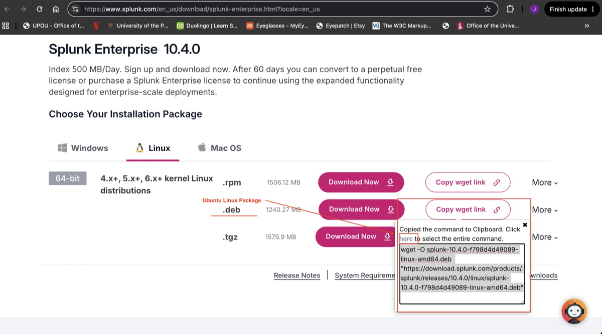
6. Create Ubuntu Virtual Machine
General Settings
| Field | Value |
|---|---|
| Node | SVR-01 |
| VM ID | 107 |
| Name | SPLUNK-SVR |
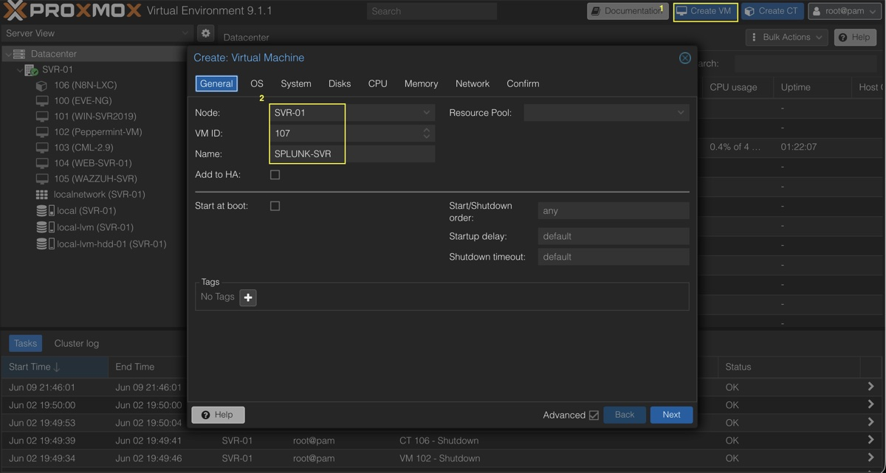
Operating System
| Field | Value |
|---|---|
| ISO | ubuntu-26.04-live-server-amd64.iso |
| Type | Linux |
| Version | 6.x Kernel |
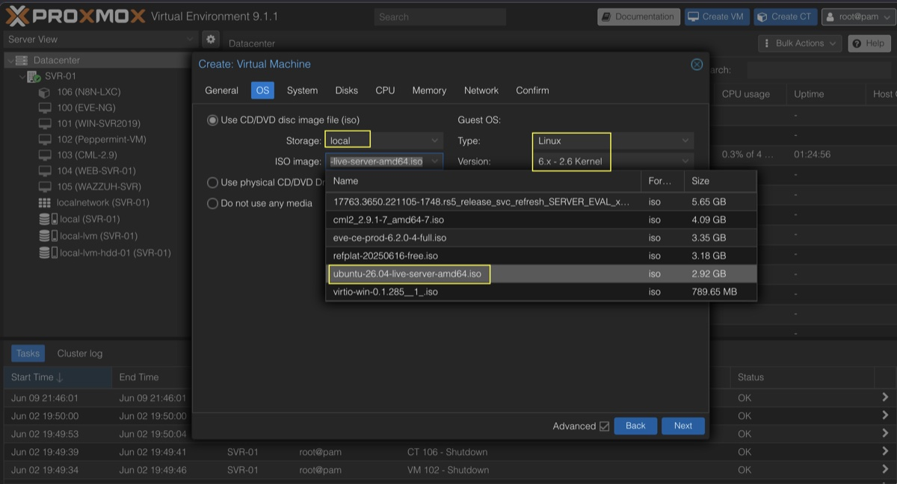
System Configuration
| Field | Value |
|---|---|
| BIOS | OVMF (UEFI) |
| Machine | q35 |
| SCSI Controller | VirtIO SCSI |
| QEMU Agent | Enabled |
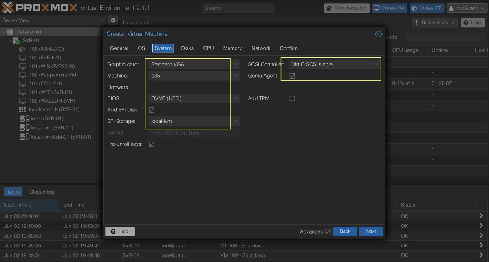
7. Configure Virtual Hardware (Disk)
| Field | Value |
|---|---|
| Storage | local-lvm-hdd-01 |
| Disk Size | 100 GB |
| Bus Type | VirtIO SCSI |
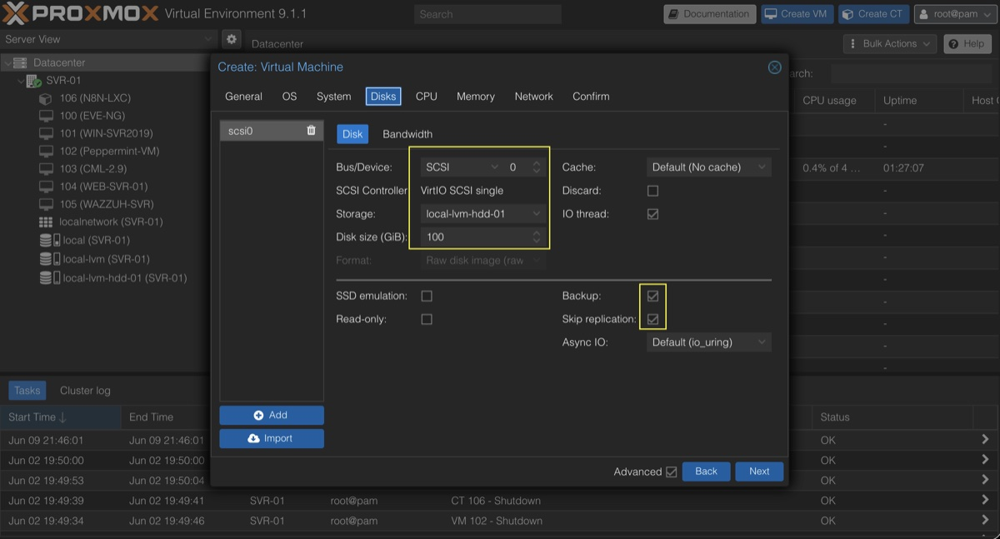
8. Configure CPU
| Field | Value |
|---|---|
| Sockets | 1 |
| Cores | 2 |
| CPU Type | host |
| NUMA | Disabled |
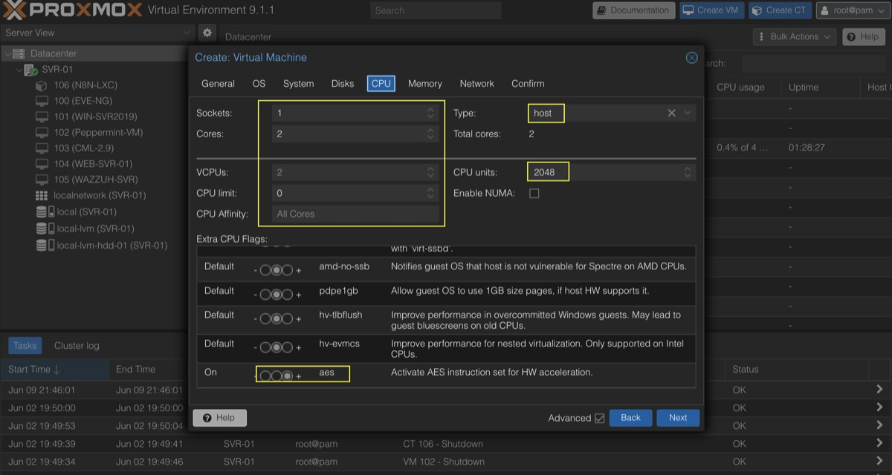
9. Configure Memory
| Field | Value |
|---|---|
| Memory | 6144 MB |
| Ballooning | Enabled |
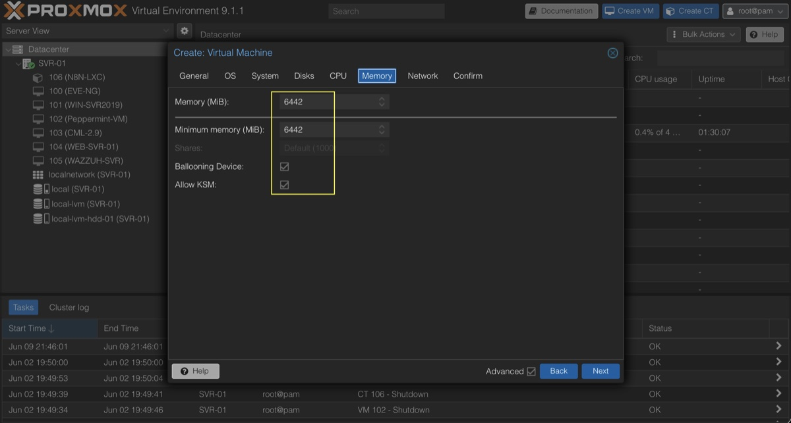
10. Configure Network (Proxmox Bridge)
| Field | Value |
|---|---|
| Bridge | vmbr0 |
| Model | VirtIO |
| Firewall | Disabled |
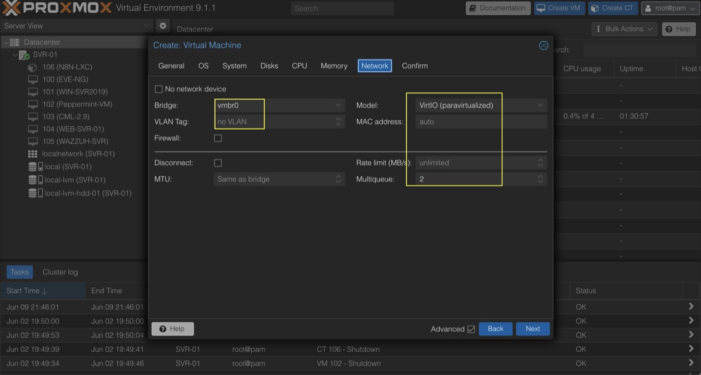
11. Confirm VM Configuration
Review all settings before final creation:
- Disk: 100GB VirtIO SCSI
- CPU: 2 Cores
- Memory: 6144MB
- Network: vmbr0
- ISO: Ubuntu Server 26.04 LTS
12. Boot Ubuntu Server Installation
Start the VM and boot from ISO:
Install Ubuntu Server13. Configure Network Settings
Assign a static IP address for Splunk VM management access.
| Parameter | Value |
|---|---|
| IP Address | 10.10.100.17 |
| Subnet | 10.10.100.0/24 |
| Gateway | 10.10.100.1 |
| DNS 1 | 10.10.100.11 |
| DNS 2 | 1.1.1.1 |
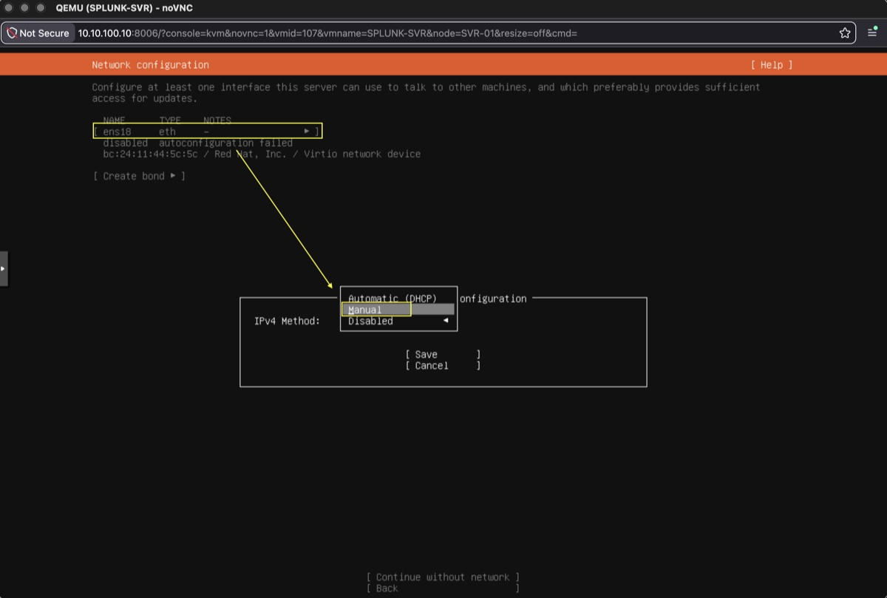
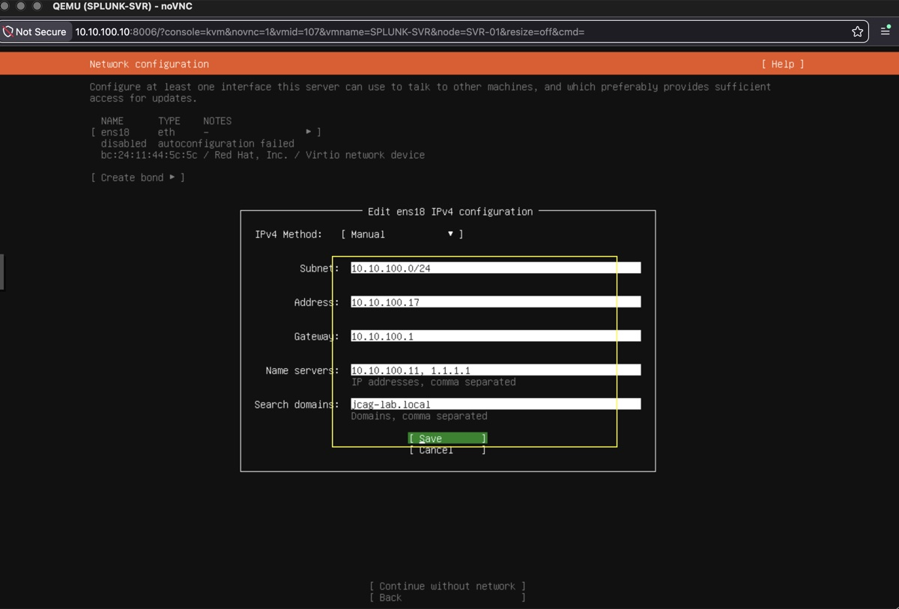
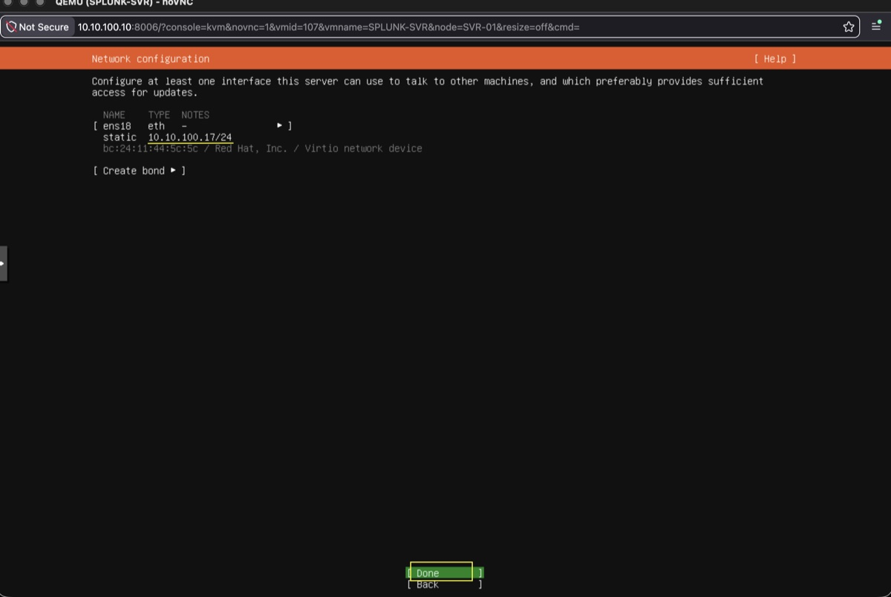
14. Storage Configuration (Ubuntu Installer)
Select storage configuration during installation:
Use Entire Disk + LVM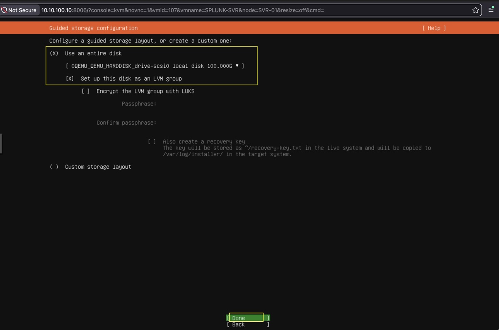
15. Finalize Configuration
Storage Configuration: Click 'Done' > 'Continue'
Profile Configuration: Enter credentials
Upgrade to Ubuntu Pro: click 'Continue'
SSH Configuration: 'x' - select > 'Done'
Featured server snaps: 'Done'
'Reboot Now'
16. System Update and Base Preparation
After first login, update system packages:
sudo apt update && sudo apt upgrade -yInstall required dependencies:
sudo apt install wget curl net-tools -y12. Download Splunk Package
Navigate to the /opt directory:
cd /optDownload the Splunk Enterprise package:
sudo wget -O /opt/splunk-10.4.0-f798d4d49089-linux-amd64.deb \
"https://download.splunk.com/products/splunk/releases/10.4.0/linux/splunk-10.4.0-f798d4d49089-linux-amd64.deb"
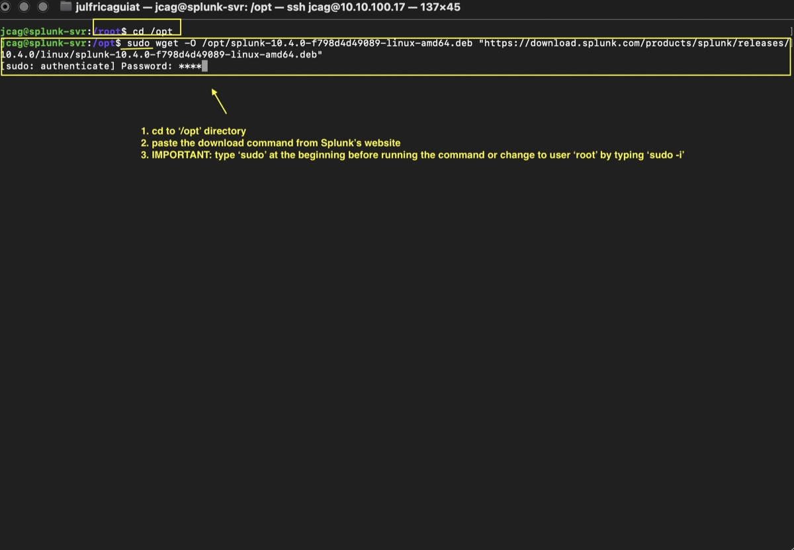
13. Install Splunk Enterprise
Install the downloaded package:
sudo dpkg -i /opt/splunk-10.4.0-f798d4d49089-linux-amd64.deb
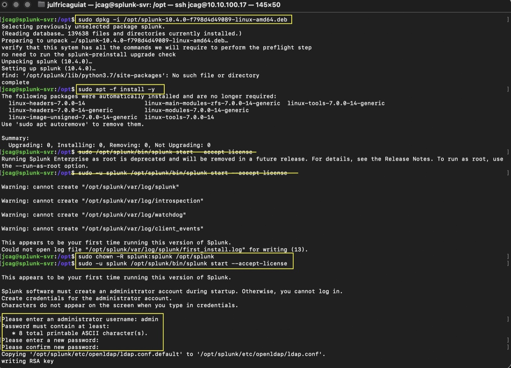
Observed Output
find: '/opt/splunk/lib/python3.7/site-packages': No such file or directory
14. Verify Dependencies
Verify package dependencies:
sudo apt -f install -y

Expected Result
No additional dependencies required.
15. Initial Startup Attempt
Attempt to start Splunk:
sudo /opt/splunk/bin/splunk start --accept-license

Observed Behavior
Running Splunk Enterprise as root is deprecated.
16. Service Account Startup Attempt
Attempt startup using the Splunk service account:
sudo -u splunk /opt/splunk/bin/splunk start --accept-license

Observed Error
Could not open log file for writing.
Root Cause
- Files were owned by root after package installation
- Splunk service account lacked write permissions
17. Correct File Ownership
Assign ownership of all Splunk files to the Splunk service account:
sudo chown -R splunk:splunk /opt/splunk

18. Successful Startup
Start Splunk again:
sudo -u splunk /opt/splunk/bin/splunk start --accept-license

Create administrator credentials when prompted:
Username: admin Password: ********
19. Splunk Initialization Tasks
During startup Splunk performs the following operations:
- Certificate generation
- Directory creation
- Index validation
- Configuration validation
- Service initialization
- Web server startup

20. Successful Deployment Verification
Verify Startup Messages
Checking http port [8000]: open Checking mgmt port [8089]: open All preliminary checks passed.

Verify Web Interface
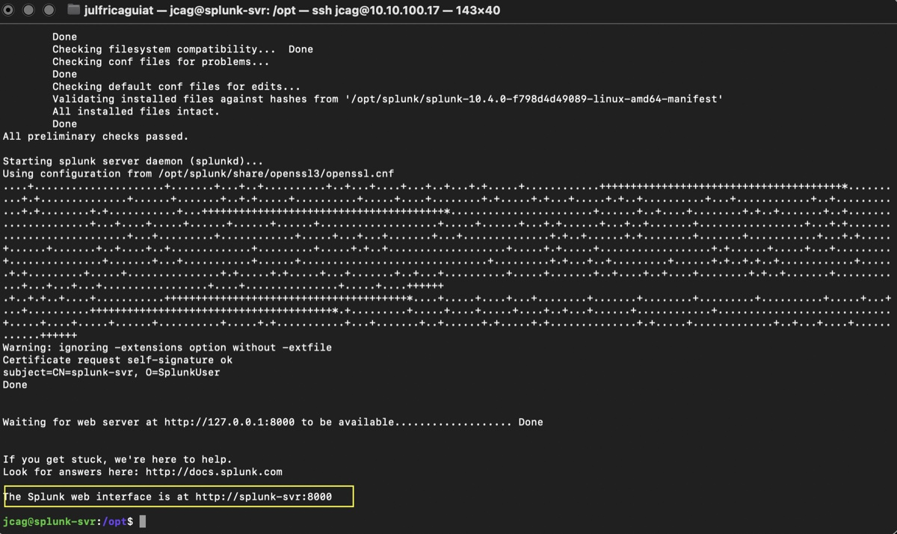
Expected Result
Splunk Web Login Page
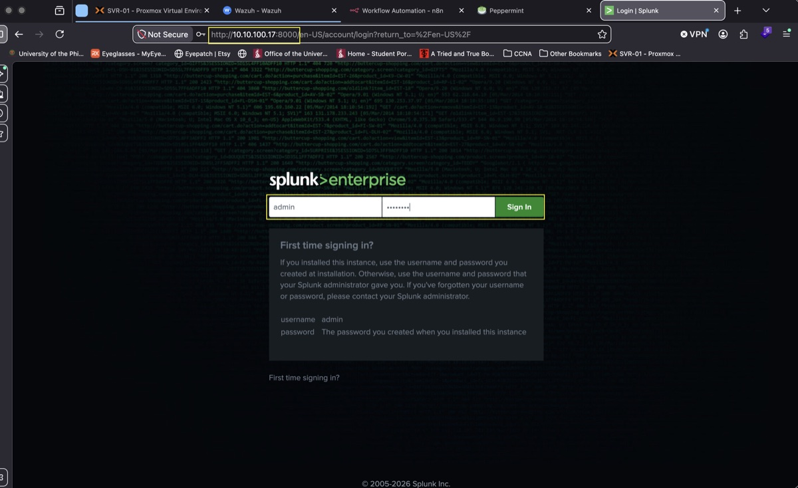
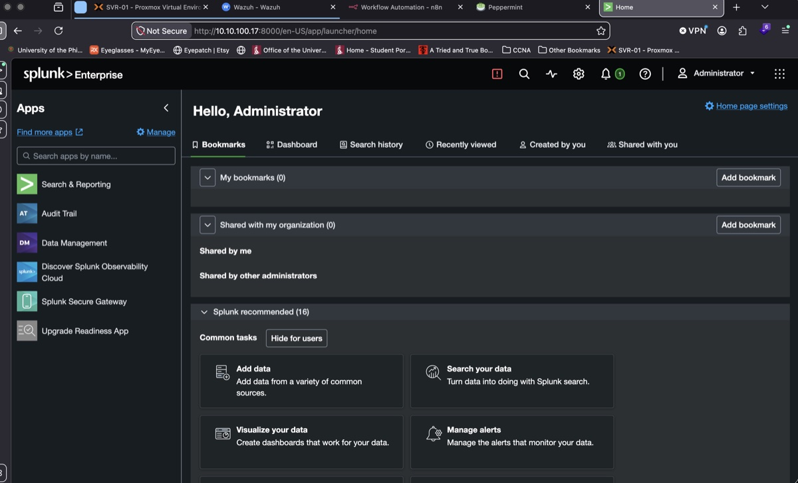
21. Deployment Complete
The Splunk Enterprise server is now operational.
| Component | Status |
|---|---|
| Ubuntu Server | Operational |
| Splunk Enterprise | Operational |
| Web Interface | Operational |
| Management Port 8089 | Operational |
| Static IP | 10.10.100.17 |
| Integration Configuration | Pending |
Future Phases
- Splunk initial configuration
- Index creation
- Data ingestion configuration
- Wazuh integration
- n8n automation integration
- SOC dashboard development